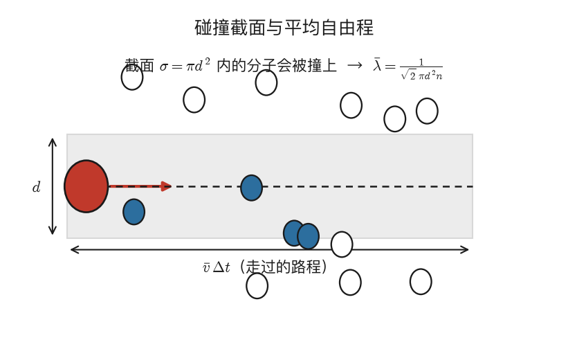
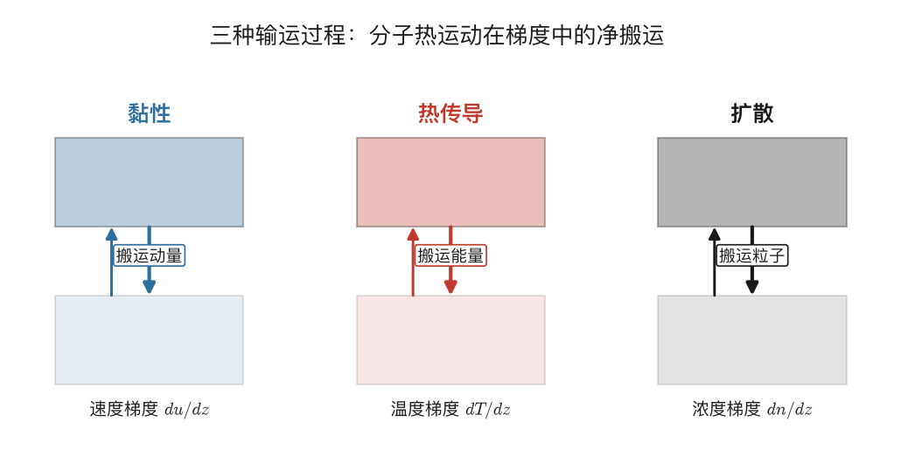
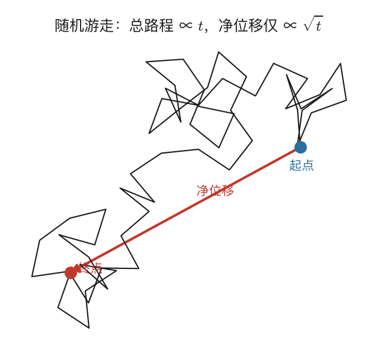
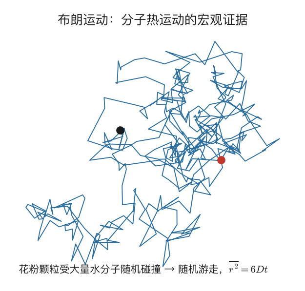

气体输运过程
5.1 离开平衡态：输运过程登场
[!考试权重] ★ 输运过程在热学B考试中占比不大（约 10%），2024 问答第 2 题考了"扩散与热传导的相似性与区别"。主要掌握三种输运的宏观定律和微观输运系数的表达式。
前面整整四章，我们的舞台都搭在平衡态（或准静态过程）上——系统内部处处均匀，温度、压强、浓度都没有差别。可现实世界恰恰相反，到处都是不均匀：一杯热咖啡慢慢变凉（温度不均匀），一滴墨水在清水里散开（浓度不均匀），流动的气体层与层之间还有内摩擦（速度不均匀）。这些过程有一个共同的名字——输运过程，因为它们的本质都是某种物理量从一处被"运输"到另一处。
把这三类现象并排看，会发现它们结构惊人地一致：每一种都由某个量的**空间不均匀性（梯度）**驱动，把对应的物理量从多的地方搬到少的地方，并各自服从一条宏观定律。热传导由温度梯度 $dT/dz$ 驱动，搬运的是能量（热量），服从傅里叶定律；黏性（内摩擦）由速度梯度 $du/dz$ 驱动，搬运的是动量，服从牛顿黏性定律；扩散由浓度梯度 $dn/dz$ 驱动，搬运的是质量（粒子数），服从菲克定律。它们表面上风马牛不相及——一个关乎冷热、一个关乎黏滞、一个关乎气味弥散——但在分子动理论看来，三者共用同一套微观机制：分子的无规则热运动，在不均匀的环境里产生了定向的"搬运"效应。本章的任务，就是把这套统一机制讲清楚，并算出三个输运系数。而要理解搬运，先得搞清楚一个关键尺度——分子在两次碰撞之间能跑多远。
[要点]
- 离开平衡态，梯度（不均匀性）驱动输运过程：物理量从多处搬向少处。
- 三种输运：热传导（温度梯度→搬能量，傅里叶）、黏性（速度梯度→搬动量，牛顿）、扩散（浓度梯度→搬粒子，菲克）。
- 三者共用同一微观机制：分子热运动在不均匀场中的净搬运。
5.2 平均自由程：分子能"记住"多远的信息
如果分子之间从不碰撞，一杯热水里的"热分子"会径直飞到杯壁，热传导该是瞬间完成的事。可现实里热传导慢得很，为什么？因为分子走的根本不是直线，而是"醉汉的路"——它不停撞上别的分子，每撞一次方向就随机一变。两次碰撞之间它飞过的平均距离，就叫平均自由程 $\bar\lambda$；相应地，单位时间内一个分子与别人碰撞的平均次数叫平均碰撞频率 $\bar Z$，二者关系是 $\bar\lambda=\bar v/\bar Z$（平均速率除以单位时间碰撞次数）。
要把 $\bar\lambda$ 算出来，把分子看成直径 $d$ 的硬球。一个分子运动时，会和所有中心落在以它运动方向为轴、半径为 $d$ 的圆柱体内的分子相撞——这个圆柱的横截面 $\sigma=\pi d^2$ 称为碰撞截面。

在 $\Delta t$ 时间内分子走过 $\bar v\Delta t$，扫过的体积是 $\sigma\bar v\Delta t$，里面的分子数就是碰撞次数。但要小心：其他分子也在动，严谨计算要用相对速率 $\overline{v_{rel}}=\sqrt2\,\bar v$，于是 $\bar Z=\sqrt2\,n\sigma\bar v=\sqrt2\,\pi d^2 n\bar v$，平均自由程
$$\boxed{\bar\lambda=\frac{\bar v}{\bar Z}=\frac{1}{\sqrt2\,\pi d^2 n}}.$$
这个公式很会"说话"：分子越大（$d$ 大）碰撞截面越大、自由程越短；分子数密度越大（气压越高）周围分子越挤、自由程越短；在 $n$ 固定时它与温度无关，但若压强固定（$n=p/kT$），则 $\bar\lambda\propto T$。用压强表示就是 $\bar\lambda=kT/(\sqrt2\,\pi d^2 p)$。代入常温常压空气（$d\approx3.7\times10^{-10}$ m，$n\approx2.5\times10^{25}$ m⁻³）算一下，$\bar\lambda\approx66$ nm，而碰撞频率 $\bar Z=\bar v/\bar\lambda\approx470/(6.6\times10^{-8})\approx7\times10^9$ 次/秒——每秒七十亿次碰撞！这就是为什么气体宏观上看起来是连续流体：碰撞如此频繁，任何不平衡都会在极短时间内被抹平。最后一个有用的概念是 Knudsen 数 $Kn=\bar\lambda/L$（$L$ 是容器特征尺寸）：$Kn\ll1$（常压）时分子碰撞频繁、气体像连续流体，适用流体力学；$Kn\gg1$（高真空）时分子几乎不碰、自由飞到器壁，属分子流；$Kn\sim1$ 是两种方法都不好用的过渡区。
[要点]
- 平均自由程 $\bar\lambda$ = 两次碰撞间的平均飞行距离；$\bar\lambda=\bar v/\bar Z$。
- 硬球模型：碰撞截面 $\sigma=\pi d^2$，考虑相对运动得 $\boxed{\bar\lambda=\dfrac{1}{\sqrt2\,\pi d^2 n}=\dfrac{kT}{\sqrt2\,\pi d^2 p}}$。
- 常温常压空气 $\bar\lambda\approx66$ nm，碰撞频率 $\sim7\times10^9$ 次/秒（故气体宏观连续）。
- Knudsen 数 $Kn=\bar\lambda/L$：$\ll1$ 连续流体、$\gg1$ 分子流。
5.3 输运的统一图像
在分头算三个系数之前，先把它们共同的微观机制看清楚，之后的推导就成了同一个模板的三次套用。设想系统里某个物理量沿 $z$ 方向不均匀（有梯度）。分子做热运动，不断从一层飞到另一层；它在出发的那一层"装上"了当地的物理量值（动量、能量或就是它自己这一个粒子），飞越大约一个自由程的距离后，在目的层通过碰撞把携带的量"卸下"交出去。由于上层和下层携带的量不同，一来一回就产生了净的输运——物理量从多的地方流向少的地方。

这套图像里的关键参数，正是上一节的平均自由程 $\bar\lambda$——它决定了分子能"记住"多远处的信息：分子在出发层装货、飞约 $\bar\lambda$ 后卸货，所以它搬来的是 $\bar\lambda$ 之外那一层的物理量值。梯度越陡、$\bar\lambda$ 越长，上下两层的差别就越大，净搬运也越强。把这个图像翻译成公式，对三种输运几乎是同一套推导，只是把"携带的量"分别换成动量、能量和粒子数而已。下面就逐个来。
[要点]
- 统一机制四步：在出发层装货（携带当地物理量）→ 飞约一个自由程 → 在目的层卸货（碰撞交出）→ 净搬运（从多到少）。
- 关键尺度是 $\bar\lambda$：分子能"记住"约一个自由程外的信息。
- 三种输运 = 同一推导，把"携带的量"换成动量 / 能量 / 粒子数。
5.4 黏性：搬运动量
先看黏性。两层气体以不同速度平行流动，快层会拖着慢层加速、慢层会拖着快层减速，这种层间的"拉扯"就是黏性力。设气体沿 $x$ 方向流动、流速 $u$ 沿 $z$ 方向变化，则相邻两层间的黏性应力服从牛顿黏性定律 $\tau=\eta\,du/dz$，其中 $\eta$ 是黏性系数（动力黏度），单位 Pa·s。
用统一图像来推导它。取 $z$ 方向某个面，从上方飞来的分子，在上一次碰撞处（距面约 $\bar\lambda$）装上了那里的流速 $u(z+\bar\lambda)$，于是带来 $x$ 方向动量 $mu(z+\bar\lambda)$；从下方飞来的带来 $mu(z-\bar\lambda)$。单位面积单位时间穿过的分子数约为 $\tfrac16 n\bar v$（$n\bar v$ 是分子通量，$1/6$ 来自六个方向的平均）。于是净动量传输率（即应力）$\tau=\tfrac16 n\bar v\cdot m[u(z+\bar\lambda)-u(z-\bar\lambda)]\approx\tfrac13 nm\bar v\bar\lambda\,du/dz$，和牛顿黏性定律一对比，得到
$$\boxed{\eta=\frac{1}{3}nm\bar v\bar\lambda=\frac{1}{3}\rho\bar v\bar\lambda}\quad(\rho=nm).$$
这个结果藏着一个反直觉、却被实验证实的惊人结论。把 $\bar\lambda=1/(\sqrt2\pi d^2 n)$ 和 $\bar v=\sqrt{8kT/\pi m}$ 代进去，化简后 $\eta=\dfrac{1}{3\sqrt2\pi d^2}\sqrt{8mkT/\pi}$——数密度 $n$ 被约掉了！ 也就是说，在常温常压范围内，气体的黏性竟然与压强（密度）无关。Maxwell 当年推出这个结论时自己都吃了一惊，后来实验果然证实。物理上的解释很精彩：压强增大使搬运动量的分子变多，但同时平均自由程缩短、每个分子搬运的距离变小，两个效应恰好抵消。至于温度依赖，$\eta\propto\sqrt T$——温度升高黏性增大，这一点和液体正好相反（液体黏度随温度升高而下降，因为机制完全不同，5.10 节会辨析）。
[要点]
- 牛顿黏性定律 $\tau=\eta\,du/dz$；黏性 = 搬运动量。
- 微观推导得 $\boxed{\eta=\tfrac13\rho\bar v\bar\lambda}$。
- 反直觉结论：$\eta$ 与压强无关（$n$ 与 $\bar\lambda$ 的效应抵消）；且 $\eta\propto\sqrt T$（与液体相反）。
5.5 热传导：搬运能量
把"携带动量"换成"携带能量"，同一套推导就给出热传导。气体里存在温度梯度时，热量从高温区流向低温区，服从傅里叶定律 $j_q=-\kappa\,dT/dz$，其中热流密度 $j_q$ 是单位面积单位时间传输的热量，$\kappa$ 是热导率（单位 W/(m·K)），负号表示热量沿温度降低的方向流。
推导与黏性如出一辙：从 $z+\bar\lambda$ 处飞来的分子携带能量 $\tfrac{i}{2}kT(z+\bar\lambda)$，从 $z-\bar\lambda$ 处飞来的携带 $\tfrac{i}{2}kT(z-\bar\lambda)$，净能量传输率 $j_q=-\tfrac13 n\bar v\bar\lambda\cdot\tfrac{i}{2}k\,dT/dz$，与傅里叶定律对比得
$$\boxed{\kappa=\frac{1}{3}n\bar v\bar\lambda\cdot\frac{i}{2}k=\frac{1}{3}\rho\bar v\bar\lambda\,c_V},$$
其中 $c_V=\tfrac{i}{2}k/m=C_{V,m}/M$ 是单位质量的定容比热。注意它和黏性系数的关系 $\kappa=\eta c_V$——这不是巧合，正是因为两者共用同一搬运机制，只是携带的量不同。（实验上 $\kappa/(\eta c_V)$ 约为 1.3–2.5，和分子类型有关，数量级吻合，偏差来自推导里 $1/6$ 因子那类粗糙近似。）和黏性一样，热导率也有两个重要性质：与压强无关（$n$ 同样被约掉），且 $\kappa\propto\sqrt T$。
[要点]
- 傅里叶定律 $j_q=-\kappa\,dT/dz$；热传导 = 搬运能量。
- 微观推导得 $\boxed{\kappa=\tfrac13\rho\bar v\bar\lambda\,c_V=\eta c_V}$（与黏性同机制）。
- 同样与压强无关、$\kappa\propto\sqrt T$。
5.6 扩散：搬运粒子
第三种，把"携带的量"换成分子本身，就是扩散。气体中某成分浓度不均匀时（比如打开一瓶香水），分子从高浓度区向低浓度区净迁移，服从菲克定律 $j_n=-D\,dn/dz$，其中粒子流密度 $j_n$ 是单位面积单位时间通过的粒子数，$D$ 是扩散系数（单位 m²/s）。
推导依旧是同一个模板：从 $z+\bar\lambda$ 飞来的分子密度为 $n(z+\bar\lambda)$、从 $z-\bar\lambda$ 飞来的为 $n(z-\bar\lambda)$，净粒子流 $j_n=-\tfrac13\bar v\bar\lambda\,dn/dz$，于是
$$\boxed{D=\frac{1}{3}\bar v\bar\lambda}.$$
扩散系数的性质和前两个略有不同，值得留意：$D=\tfrac13\bar v\cdot\dfrac{kT}{\sqrt2\pi d^2 p}$，所以 $D\propto1/p$（压强越大、自由程越短、扩散越慢），且 $D\propto T^{3/2}$（因为 $\bar v\propto T^{1/2}$、$\bar\lambda\propto T$）。

正是这个"醉汉的路"解释了一个常让人困惑的问题：分子热运动速率明明高达约 500 m/s，扩散却慢得像蜗牛。原因在于扩散是随机游走——分子每飞约 66 nm 就被撞偏，1 秒内虽然飞了约 500 m 的总路程，净位移却只有 $\sqrt{2Dt}$ 量级的几毫米。随机游走的净位移正比于 $\sqrt t$，远慢于直线飞行的 $\propto t$，这就是"一步一碰、进展缓慢"的代价。
[要点]
- 菲克定律 $j_n=-D\,dn/dz$；扩散 = 搬运粒子。
- 微观推导得 $\boxed{D=\tfrac13\bar v\bar\lambda}$；$D\propto T^{3/2}/p$。
- 扩散远慢于分子速率，因为是随机游走：净位移 $\propto\sqrt t$，远小于总路程 $\propto t$。
5.7 三种输运系数对比
把三者并排一比，统一性就一目了然。它们的微观表达都形如 $\tfrac13\rho\bar v\bar\lambda$ 乘上各自"每个分子携带的量"：黏性携带动量、表达式 $\eta=\tfrac13\rho\bar v\bar\lambda$；热导携带能量、表达式 $\kappa=\tfrac13\rho\bar v\bar\lambda\,c_V$；扩散携带粒子、表达式 $D=\tfrac13\bar v\bar\lambda$。
| 黏性 $\eta$ | 热导率 $\kappa$ | 扩散系数 $D$ | |
|---|---|---|---|
| 输运的量 | 动量 | 能量 | 粒子数 |
| 宏观定律 | $\tau=\eta\,du/dz$ | $j_q=-\kappa\,dT/dz$ | $j_n=-D\,dn/dz$ |
| 微观表达 | $\tfrac13\rho\bar v\bar\lambda$ | $\tfrac13\rho\bar v\bar\lambda\,c_V$ | $\tfrac13\bar v\bar\lambda$ |
| 与压强关系 | 无关 | 无关 | $\propto1/p$ |
| 与温度关系 | $\propto T^{1/2}$ | $\propto T^{1/2}$ | $\propto T^{3/2}$ |
三者还有简洁的内在关系 $D=\eta/\rho$、$\kappa=\eta c_V$（更精确的理论修正系数约 1–2.5 倍，但数量级关系成立）。一个值得记住的反差：黏性和热导率都与压强无关，扩散系数却随压强反比下降——根源在于扩散系数里没有那个抵消 $n$ 的密度因子 $\rho$。
[要点]
- 三系数同形 $\tfrac13\rho\bar v\bar\lambda\times$（每分子携带量）：$\eta$（动量）、$\kappa=\eta c_V$（能量）、$D=\eta/\rho$（粒子）。
- $\eta,\kappa$ 与压强无关、$\propto\sqrt T$；$D\propto T^{3/2}/p$（随压强反比）。
5.8 布朗运动：分子存在的铁证
最后看一个把分子热运动直接"看见"的现象。1827 年植物学家布朗用显微镜观察悬浮在水中的花粉颗粒，发现它们永不停歇地做无规则运动——这就是布朗运动。它的机制，正是分子热运动的宏观显形：花粉颗粒虽比分子大得多（微米量级），却时刻受到周围海量水分子的随机碰撞，这些碰撞来自四面八方、各有不同的动量，合力不为零且不停随机变化，于是推着颗粒做随机游走。

1905 年爱因斯坦给出了布朗运动的定量理论。对半径 $r$ 的球形粒子在黏度 $\eta$ 的流体中，扩散系数 $D=\dfrac{kT}{6\pi\eta r}$，这就是爱因斯坦-斯托克斯关系；而粒子的均方位移随时间线性增长，$\overline{x^2}=2Dt$（一维）、$\overline{r^2}=6Dt$（三维）。这套理论的历史意义怎么强调都不过分：佩兰（1908）通过精确测量布朗运动验证了爱因斯坦的公式，并由此精确测定了阿伏伽德罗常数——这是分子真实存在的决定性实验证据之一。要知道在那之前，还有不少科学家压根不相信原子和分子是真实的东西，是布朗运动让它们从假说变成了事实。
[要点]
- 布朗运动：悬浮微粒受周围大量分子随机碰撞而做随机游走，是分子热运动的宏观证据。
- 爱因斯坦-斯托克斯关系 $D=\dfrac{kT}{6\pi\eta r}$；均方位移 $\overline{r^2}=6Dt$（三维）。
- 佩兰据此测定阿伏伽德罗常数，成为分子真实存在的决定性证据。
5.9 例题精讲
三道题对应本章主要考法：平均自由程与碰撞频率、输运系数关系、布朗运动。
例题 1：平均自由程与碰撞频率
题目：常温常压（$T=300$ K，$p=1.0\times10^5$ Pa）下某气体分子直径 $d=3.0\times10^{-10}$ m，平均速率 $\bar v=4.6\times10^2$ m/s。求其平均自由程与碰撞频率。
思路：用 $\bar\lambda=kT/(\sqrt2\pi d^2 p)$ 直接算自由程，再用 $\bar Z=\bar v/\bar\lambda$ 求碰撞频率。
解答：$\bar\lambda=\dfrac{1.38\times10^{-23}\times300}{\sqrt2\times3.14\times(3.0\times10^{-10})^2\times1.0\times10^5}\approx1.0\times10^{-7}$ m（约 100 nm）。碰撞频率 $\bar Z=\dfrac{\bar v}{\bar\lambda}=\dfrac{460}{1.0\times10^{-7}}\approx4.6\times10^9$ 次/秒。
例题 2：输运系数的温度与压强依赖
题目：某理想气体的黏性系数、扩散系数。问：(1) 温度升高到 4 倍（压强不变）时，黏性系数变为几倍？(2) 压强增大到 2 倍（温度不变）时，扩散系数变为几倍？
思路：记住依赖关系——$\eta\propto T^{1/2}$ 且与压强无关；$D\propto T^{3/2}/p$。
解答：(1) $\eta\propto\sqrt T$，温度变 4 倍则 $\eta$ 变为 $\sqrt4=2$ 倍。(2) $D\propto1/p$（温度不变），压强变 2 倍则 $D$ 变为原来的 $1/2$。
例题 3：布朗运动的均方位移
题目：半径 $r=1.0\times10^{-6}$ m 的球形颗粒悬浮在 $T=300$ K、黏度 $\eta=1.0\times10^{-3}$ Pa·s 的水中。求其扩散系数，以及 10 s 后的三维均方位移。
思路：先用爱因斯坦-斯托克斯关系 $D=kT/(6\pi\eta r)$ 求 $D$，再用 $\overline{r^2}=6Dt$。
解答：$D=\dfrac{1.38\times10^{-23}\times300}{6\pi\times1.0\times10^{-3}\times1.0\times10^{-6}}\approx2.2\times10^{-13}$ m²/s。$\overline{r^2}=6Dt=6\times2.2\times10^{-13}\times10\approx1.3\times10^{-11}$ m²，即均方根位移约 $\sqrt{1.3\times10^{-11}}\approx3.6\times10^{-6}$ m（几微米），与颗粒尺寸相当——这正是显微镜下能看到颗粒明显晃动的原因。
🎯 真题：2024 问答第 2 题
题目：解释气体扩散和热传导过程的相似性与不同之处。
答题要点：
相似性：
- 都涉及分子的随机热运动
- 都依赖于分子之间的碰撞和相互作用
- 都需要一定的梯度来驱动（浓度梯度或温度梯度）
- 微观机制相同：分子飞越约一个平均自由程后"卸下"所携带的物理量
不同之处：
扩散涉及物质（分子）的净迁移，是质量传递
热传导涉及能量（热量）的净传递，分子本身不需要宏观位移
宏观定律不同：扩散服从菲克定律 $j_n = -D\,dn/dz$，热传导服从傅里叶定律 $j_q = -\kappa\,dT/dz$
输运系数对压强的依赖不同：$\kappa$ 与压强无关，$D \propto 1/p$
5.10 概念辨析
黏性系数为什么不随压强变化？ 这是微观推导的直接结论：$n$ 与 $\bar\lambda$ 的乘积是常数（$n\bar\lambda=1/(\sqrt2\pi d^2)$）。物理上，压强增大使搬运动量的分子变多，但每个分子搬运的距离（自由程）变短，两者恰好抵消。不过这有适用范围：极低压（$Kn>1$）下分子不再频繁碰撞、连续性假设失效，极高压下分子自身体积不可忽略、理想气体假设失效。
为什么高温下气体黏度增大、而液体黏度减小？ 这是两种完全不同的机制。气体黏性来自分子热运动搬运动量，温度高、分子动得快、搬运能力强，故黏度增大；液体黏性来自分子间吸引力阻碍相对滑动，温度高、分子动能更容易克服吸引、更易滑动，故黏度减小。
扩散为什么比声速慢那么多？ 分子热运动速率确实很快（约 500 m/s），但扩散是随机游走——每飞约 66 nm 就被撞偏。1 秒内分子总路程约 500 m，净位移却只有几毫米。净位移 $\propto\sqrt t$，远慢于直线的 $\propto t$，这就是随机游走"一步一碰"的代价。
5.11 公式速查卡
考前最后扫一遍。★ 必背直接套，○ 理解即可。
平均自由程与碰撞频率 ★
$$\bar\lambda=\frac{1}{\sqrt2\,\pi d^2 n}=\frac{kT}{\sqrt2\,\pi d^2 p},\qquad \bar Z=\sqrt2\,\pi d^2 n\bar v=\frac{\bar v}{\bar\lambda}$$
三个输运系数 ★
$$\eta=\frac{1}{3}\rho\bar v\bar\lambda,\qquad \kappa=\frac{1}{3}\rho\bar v\bar\lambda\,c_V=\eta c_V,\qquad D=\frac{1}{3}\bar v\bar\lambda=\frac{\eta}{\rho}$$
依赖关系：$\eta,\kappa$ 与压强无关、$\propto T^{1/2}$；$D\propto T^{3/2}/p$。
爱因斯坦-斯托克斯关系 ○
$$D=\frac{kT}{6\pi\eta r},\qquad \overline{r^2}=6Dt\ (\text{三维})$$
5.12 本章小结
这一章我们走出了平衡态，进入到充满梯度的真实世界。三种看似毫不相干的现象——黏性、热传导、扩散——其实是同一个微观故事的三种讲法：分子带着当地的物理量（动量、能量或自身）做热运动，飞越大约一个平均自由程后在别处卸下，于是不均匀的量被一点点抹平。这个统一图像让三个输运系数共享同一个骨架 $\tfrac13\rho\bar v\bar\lambda$，也解释了黏性与热导率为何反直觉地与压强无关。而平均自由程这把尺子（常温常压空气约 66 nm）既支撑了"气体宏观连续"的图景，又通过随机游走解释了扩散为何远慢于分子速率。最后，布朗运动把分子热运动直接搬到了显微镜下，连同爱因斯坦的定量理论，为"分子真实存在"盖上了实验的终极印章。下表收拢要点。
| 核心概念 | 一句话抓住它 |
|---|---|
| 平均自由程 | $\bar\lambda=1/(\sqrt2\pi d^2 n)$；常温常压空气约 66 nm；$\propto1/n$ |
| 碰撞频率 | $\sim10^{9\text{–}10}$ 次/秒；保证气体宏观连续 |
| 输运统一机制 | 分子热运动在不均匀场中的净搬运；尺度是 $\bar\lambda$ |
| 黏性 | 搬运动量；$\eta=\tfrac13\rho\bar v\bar\lambda$，与压强无关、$\propto\sqrt T$ |
| 热传导 | 搬运能量；$\kappa=\eta c_V$，与压强无关、$\propto\sqrt T$ |
| 扩散 | 搬运粒子；$D=\tfrac13\bar v\bar\lambda\propto T^{3/2}/p$ |
| 布朗运动 | 分子热运动的宏观证据；$\overline{r^2}=6Dt$ |